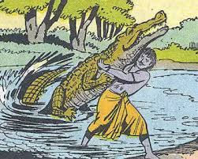
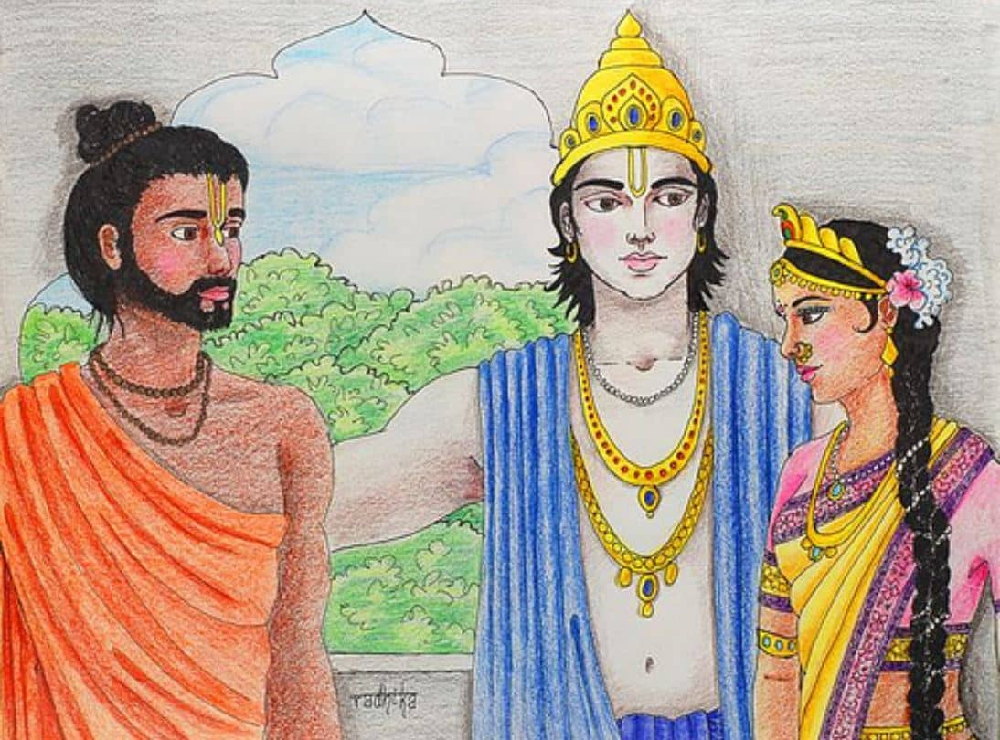
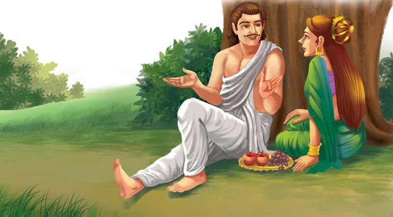

From Indraprastha, Arjuna first went to the Himalayas and passed his time in the company of sages, attending their discourses and performing the religious rituals. One day Ulupi, daughter of the Naga king, who was the ruler of the serpent world under water, saw Arjuna engaged in his religious pursuits. Arjuna's handsome personality always attracted the damsels. Ulupi was no exception. She immediately fell in love and decided to abduct Arjuna and marry him. So, when Arjuna went for a bath in the river, she grabbed him and took him to her father's under water palace. Arjuna was puzzled by the abduction and asked Ulupi about her intentions. Ulupi explained, "I am the princess of the Naga kingdom. I am sorry for the inconvenience caused to you. I have brought you here to make you my husband. You have no way to escape." Arjuna had no choice. He accepted the proposal offered by Ulupi and stayed with her for a while. Then one day Arjuna appealed to Ulupi the reason for his inability to continue staying with her when he was expected to travel during his period of exile. Ulupi agreed and returned Arjuna to the surface. Before bidding him farewell, she gave Arjuna a boon of protection from the bite of any water creature. Arjuna then went on a long journey towards the east and finally reached Manipur. Chitravahana was then the king of Manipur. He accorded him a warm welcome and Arjuna decided to stay with him for a while. Chitravahana had a beautiful daughter, Chitrangada. Arjuna was fascinated by Chitrangada’s beauty and decided to marry her. So he approached Chitravahana asking for Chitrangada’s hand in marriage. Chitravahana was happy, but he put a condition for the marriage. "Chitrangada is my only child and I do not have an heir to continue my dynasty. So, I have decided to adopt her son. If you plan to marry Chitrangada, you must give me her son who will be the crown prince of my kingdom." Arjuna accepted the condition and married Chitrangada. Finally, a son was born after three years whom Chitravahana adopted. Then Arjuna continued his journey, as expected, leaving Chitrangada in Manipur. After leaving Manipur, Arjuna moved southward reaching the seashore (close to the present pilgrimage center of Puri). There he was once again in the company of sages and saints.

One day, the sages complained to Arjuna that the nearby waters were infested with ferocious crocodiles. They had to go a long way to other back waters in order to take a bath. Arjuna promised to do away with the crocodiles. Mindful of Ulupi's boon, Arjuna jumped into the waters to kill the crocodiles. Soon a huge crocodile caught his leg and Arjuna promptly dragged the crocodile out of the water. To his utter surprise, the crocodile was instantaneously transformed into a heavenly nymph. Arjuna asked, "Who are you?" The nymph answered, "Long ago, my four friends and I were playing in water and offended a sage. The sage cursed us to become crocodiles and stay in water forever. We apologized and begged for mercy. The sage took pity on us and toned the curse down by saying that we would be rescued many years later when a virtuous warrior would pull us out of the water. We would then be transformed into our true self. So, please be kind to rescue my other four friends also." Arjuna agreed and one by one pulled out the remaining four crocodiles. Like the previous one, they also got back into their real form of heavenly maidens. They all thanked Arjuna heartily for liberating them; they then departed to their heavenly abode. After a while, Arjuna headed towards Prabhas, located on the west coast of India, to spend time in meditation. There he decided to move to Dwaraka to stay with Krishna, his best friend. Krishna's elder brother Balarama, the king, gave a warm welcome to Arjuna and Arjuna stayed in Dwaraka for few days. One day Arjuna caught sight of Subhadra, Krishna's sister, and fell in love with her. Balarama, however, already chose Duryodhana as Subhadra’s future husband. When Krishna foresaw the situation, he indirectly suggested Arjuna to elope with Subhadra, saying, "A Kshatriya like you never begs to win his lady love. He wins her hand by force." Arjuna got the clue. He borrowed Krishna's chariot and forcibly took Subhadra away when she was returning from the temple. Balarama flew into a rage and called for Krishna before waging war against Arjuna. He had guessed that the abduction must have been committed with the connivance of Krishna. Balarama burst out at Krishna. "It is disgraceful to tolerate the misdoing of Arjuna, your best friend. I could never imagine that a royal guest like him will return our favor by this mean act. What do you have to say before we go after Arjuna?" Krishna heard the allegations carefully and spoke in a pacifying mood. "Brother Balarama, isn't it a pride for us to be related to the Pandavas? They will be our strong allies. Arjuna is invincible, and if we are defeated, it will be more disgraceful. I will suggest that we honorably call Arjuna back and arrange for a royal marriage between Subhadra and Arjuna."

Balarama comprehended the gravity of the situation and realized the odds of winning a fight against Arjuna. Thus, he soon arranged for their royal marriage and Arjuna moved to Pushkar, near modern Ajmer. Here he spent the rest of his period of exile. After the completion of the exile period, Arjuna returned to Indraprashtha with Subhadra. As Arjuna went to see Yudhishthira to pay his respect, Subhadra went to see Kunti and touched her feet with great reverence. Draupadi was quite upset in the beginning but Subhadra's humility won her heart in no time.

"Sister, kindly accept me as your maid-in attendance" said Subhadra in a humble voice. Balarama and Krishna came to Indraprastha to join the celebration of Arjuna's return and strengthening their ties with the Pandavas as their in-laws. After few days Balarama returned to Dwaraka and Krishna chose to stay behind. In due course of time, Subhadra gave birth to a lovely son who was named Abhimanyu. Draupadi gave birth to five sons - one from each of her husband. Gradually the princes of the Pandavas grew up to their manhood as strong as their parents and uncles and everyone was proud of them.